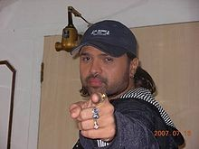

Himesh Reshammiya

Reshammiya in 2007
Background information
Birth name Himesh Reshammiya
Also known as Himesh Bhai, HR.
Born Mumbai, Maharashtra, India
Origin Mumbai
Genres
• Rock
• pop
• dance
Occupation(s)
• Music director
• composer
• singer
• actor
Instruments
• Tabla
• dholok
• guitar
• drums
• harmonium
• piano
• violin
Years active 1989–present
Labels T-Series, HR Musik Limited
Himesh Reshammiya is an Indian music director, singer, producer, lyricist, distributor and actor. His father, Vipin Reshammiya was also a music composer and director for Gujarati film and TV.
Music and film career
As a singer, he churned out songs like "Aashiq Banaya Aapne", "Tera Suroor", "Zara Jhoom Jhoom", "Jhalak Dikhlaja", "Shakalaka Boom Boom", "Hookah Bar", "Chalao Na Naina Se", "Tandoori Nights" which were popular. Reshammiya's music has a style of composition based on a fusion of Western and Indian classical music accompanied by techno beats. He started his acting career with his debut film, Aap Kaa Surroor.[1]
In August 2010, it was announced that music video director Roman White is going to direct videos of Reshammiya's first international album in English, named @ Da Edge, which was to be released in 2016; [needs update] the album to be released in 122 countries.[citation needed] Reshammiya was the first Indian singer to perform at the Wembley Arena and the Heineken music hall in Amsterdam.[2]
Before becoming a music director, Reshammiya produced several television serials, including Amar Prem and Andaaz on Zee TV. He also composed the title song of both.
Reshammiya was actively involved in mentoring and judging the singing competition, Sa Re Ga Ma Pa Challenge on Zee TV. His group was known as Jai Mata Di Let's Rock Gharana. He was the winning mentor of the show in 2007. In 2009, Vaishali Mhade, a female contestant from his Rock Gharana, won the singing competition. He is also the team captain, judge and mentor on Star Plus's show, Music Ka Maha Muqqabla for the team Himesh's Warriors. Reshammiya was also the judge of the musical reality show Sur Kshetra which was telecasted on Sahara One. Reshammiya appeared as the special guest in the Grand Finale of 'Jo Jeeta Wohi Superstar' 2 where he also trained the top four contestants.[3]
On 4 November 2013, it was announced that Reshammiya will be acting and producing a movie named The Xposé.[4]
Alleged copyright violation
In his debut film as an actor, Aap Kaa Surroor, Reshammiya added a song Tanhaiyaan from Boney Kapoor's proposed film Milenge Milenge.[5] Initially, Reshammiya had composed the song for Kapoor's film but later decided to use it for his own movie. Tips, which held the audio rights of Milenge Milenge, accused Reshammiya of copyright violation, as audio rights for Aap Kaa Surroor – The Real Luv Story were acquired by T-Series.[6] However, Reshammiya defended himself saying that he had made Kapoor listen to the song, but it was not included in Milenge Milenge. He also claimed to have tried to get in touch with Kapoor for seven months, and since there was no progress on the film, he decided to use the song for his own movie.[7]
Awards and nominations
Main article: List of awards and nominations received by Himesh Reshammiya
Reshammiya won the Filmfare Award for Best Male Playback Singer in 2006 for Aashiq Banaya Aapne and also received several awards like Star Screen Award, IIFA Award, Zee Cine Award for this song and became first ever Bollywood singer to receive Filmfare Award for his debut song. He also received several nominations for his Music Direction. He was presented the Phalke Best Supporting Actor Award for Khiladi 786 at 13th Dadasaheb Phalke Academy Awards.[8]
Personal life
At the age of 21, Reshammiya married Komal and they have a son, named Swayam.[9] Vipin Reshammiya, a veteran music composer, and Madhu Reshammiya are Himesh's parents. On 12 September 2016 it was reported that Himesh and Komal have mutually agreed to separate and file for divorce. “Sometimes in life, mutual respect becomes the most important and giving due respect to our relationship, Komal and I have amicably decided to part ways… There is no problem whatsoever with this decision among us and our family as every member respects it. Yet, Komal is and will always remain a part of our family and I will always be a part of her family,” the 43-year-old actor told Mid-Day.Komal, who also spoke to the daily, she said, “Himesh and I completely respect each other and are jointly going ahead with this decision to part ways, but mutual respect will always be there between us as I am a part of his family and will always be, and the same stands for him towards my family.” [10] According to media reports, Himesh and Komal have been living separately for some months now, and they have applied for divorce in a Bandra court.
Second studio album
After a gap of 10 years since the release of Reshammiya's first studio album Aap Kaa Surroor, On Thursday, 15 September 2016 trailer of his second studio album Aap Se Mausiiquii was released on YouTube.[11] The album has 10 songs composed and sung by Reshammiya, the first song of the album was released on Friday, 4 November 2016. The entire album was released on 5 December, 2016.
Albums[edit]
Year Album Notes
5 December 2016 Aap Se Mausiiquii
2nd studio album, Entire album was released on 5 December 2016.
19 January 2006 Aap Kaa Surroor
Debut album as singer, highest sold album in India.[citation needed]
1 October 2003 Tera Meraa Dil Salman Khan made an appearance in the music video of the song "Honey Honey".
August 1995 Zindagi
Sung by Suchitra Krishnamurthy lyrics by Sudhakar Sharma.
Filmography[edit]
As a lyricist[edit]
Year Film Song Notes
2016 Sanam Teri Kasam (2016 film)
Ek Number Duet with Neeti Mohan
2012 Khiladi 786
Hookah Bar
As a producer
Reshammiya, along with his father Vipin Reshammiya, has produced and distributed films under the banner "HR Musik Limited".
Year Film Notes
2011 Damadamm!
Also wrote story
2012 Khiladi 786 Co-produced by Hari Om Entertainment, Sunil Lulla
2014 The Xposé
Also wrote story and Screenplay
2016 Teraa Surroor
Co-produced by HR Musik Limited and T-Series
As a story writer
Year Film Notes
2011 Damadamm!'
2012 Khiladi 786 Also wrote lyrics
2014 The Xposé Also wrote screenplay (with Jainesh Ejardar)
As a background composer
Year Film Notes
2000 Kurukshetra
2012 Khiladi 786 Also lyrics, music director, composer, singer and actor
2014 The Xposé Co-background composer Sanjoy Chowdhury, also a music director, composer, singer and actor
2015 Prem Ratan Dhan Payo
Co-background composer Sanjoy Chowdhury
2016 Teraa Surroor Also music director, composer, singer and actor
As a music director[edit]